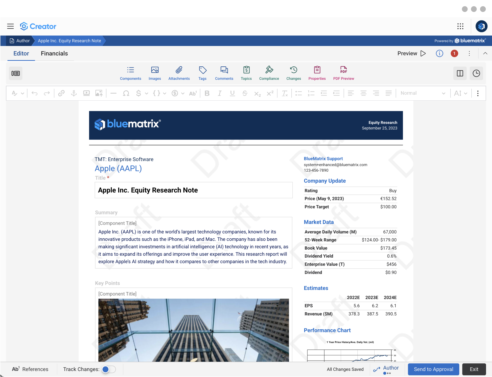
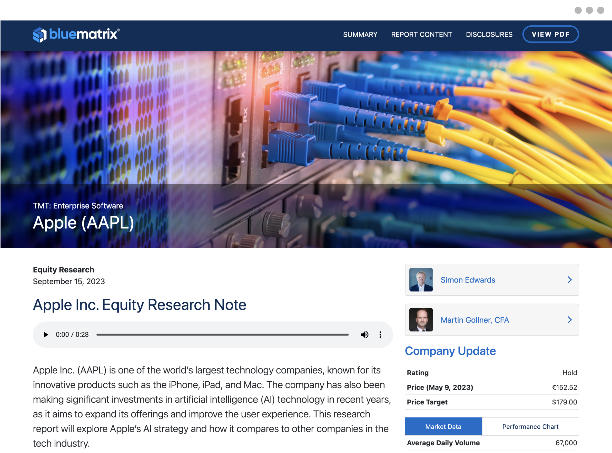
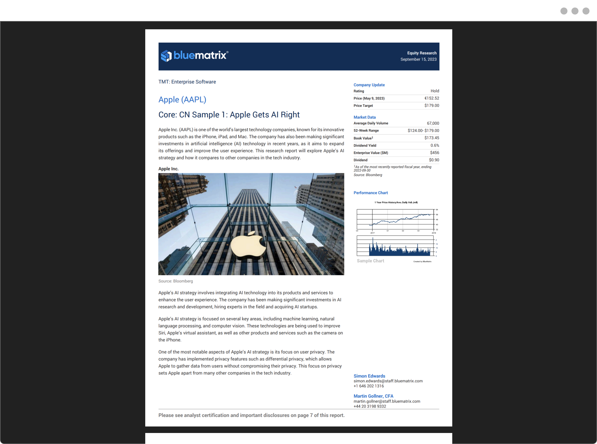
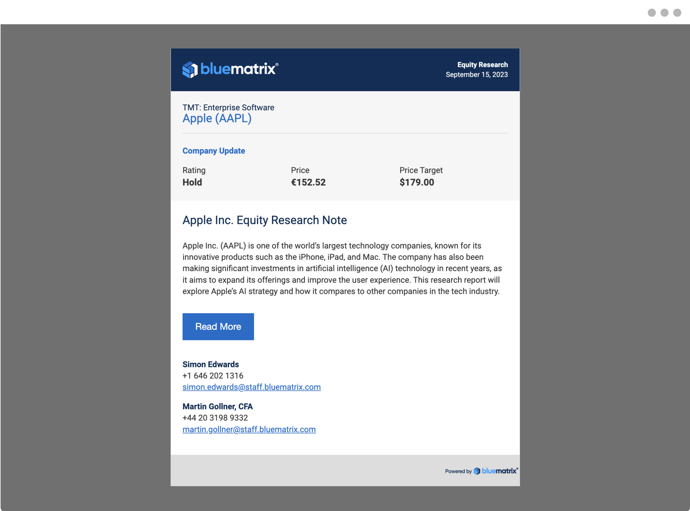

Research Delivery at Scale
Design and development of custom-branded research templates for institutional investment banks, built to publish accurately across web, PDF, and email using XSLT and client-specific data models.
- Company
- BlueMatrix
- Role
- Designer & Developer
- Tools
-

The Research Publication Problem
Investment banks publish complex, data-heavy research consistently across formats while maintaining strict brand standards. High-stakes research must:
- Be accurate and compliant
- Match firm-specific branding
- Publish reliably across web, PDF, and email in a single click
Built for Enterprise-Scale Publishing
- Enterprise fintech environment with strict publishing and compliance requirements
- Non-technical authors creating content inside a structured authoring system
- Multiple output formats with different layout and rendering limitations
- Client-specific data models powering financial tables, company information, and metrics
- Solutions must scale across dozens of clients without becoming brittle
Templates That Bridge Authors, Data, and Output
A scalable, design-driven template system that bridges authoring, data, and output.
Custom authoring templates encode each client's brand system, guide analysts toward consistent layouts, and dynamically pull in structured financial data. The result is a system where authors focus on content, design stays consistent, and data flows accurately from internal models to published research.




The same report renders automatically across every format, PDF, web, and email, from a single authoring environment.
Consistency and Scale, Delivered
The system now powers branded research publishing for investment banks and boutique firms of all sizes, cutting down on the manual formatting errors and inconsistencies that had plagued earlier workflows. Output quality became more predictable across web, PDF, and email simultaneously. Reusable widgets also shortened the onboarding process for new clients, giving smaller firms in particular a ready-made framework for structuring their content from day one.
In production for
(selected clients)